We believe security software like Whonix needs to remain Open Source and independent. Would you help sustain and grow the project? Learn more about our 11 year success story and maybe DONATE!
This page documents how to the Tor Browser digital software signatures for users of Microsoft Windows.
 COMMUNITY SUPPORT ONLY : THIS WHOLE WIKI
PAGE is only supported by the community. Whonix
developers are very unlikely to provide free support
for this content. See Community Support for further information,
including implications and possible alternatives.
COMMUNITY SUPPORT ONLY : THIS WHOLE WIKI
PAGE is only supported by the community. Whonix
developers are very unlikely to provide free support
for this content. See Community Support for further information,
including implications and possible alternatives.
Introduction
GnuPG is a complete and free
implementation of OpenPGP that
allows users to encrypt and sign data and communications. Gpg4win is a graphical front end for
GnuPG that is used for file and email encryption in Windows. The
verification process for Tor Browser installer begins with securely
downloading and verifying the gpg4win package. Once
completed users can use GPG from the command-line to verify the Tor
Browser installer.
The following guide provides steps to:
- Install SignTool.
- Download and verify GPG4win.
- Download Tor Browser Installer for Windows
- Verify Tor Browser Installer
- Install Tor Browser
Install GPG4win
Install SignTools
SignTools is a Windows command-line tool that uses Authenticode to digitally sign files and verify both signatures in files and timestamp files. SignTool is available as part of Microsoft Windows SDK, which can be installed in just a few easy steps.
1. Download the latest version of the SDK for the most recent stable version of Windows from the Windows SDK and emulator archive. Make sure to select "Install SDK".
2. Double-click the downloaded file. There's no need to change the default installation path. Click "Next".
Figure: Installation Path
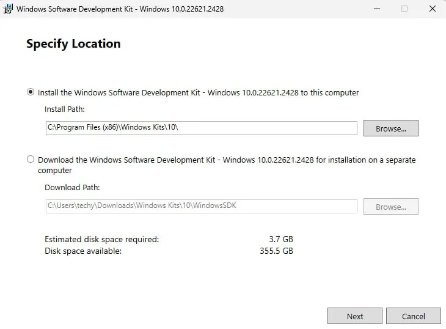
3. There's no need to enable Microsoft Insights collection, so select "No" and then click "Next".
Figure: Windows Kits Privacy
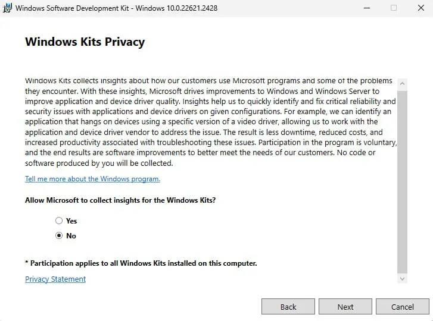
4. Install the necessary SDK package.
The Windows SDK installer provides a number of different packages
that can be installed. The only package needed for gpg4win
verification is Windows SDK Signing Tools for Desktop Apps
(SignTools). Choose it then press on "Install".
Figure: Select SignTools Package
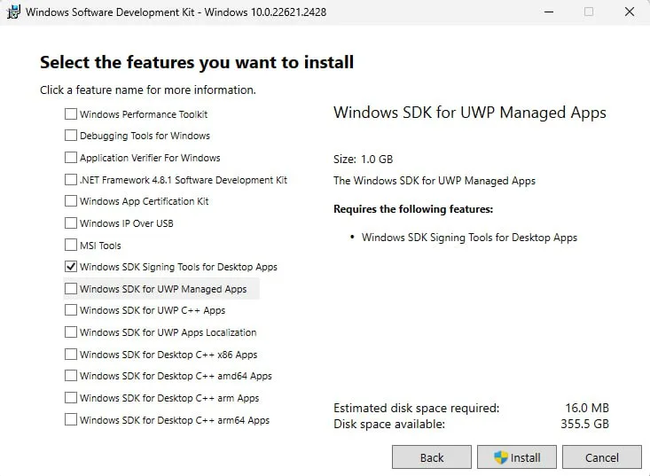
5. Once the installation is complete, close the installer.
Figure: Installation completed
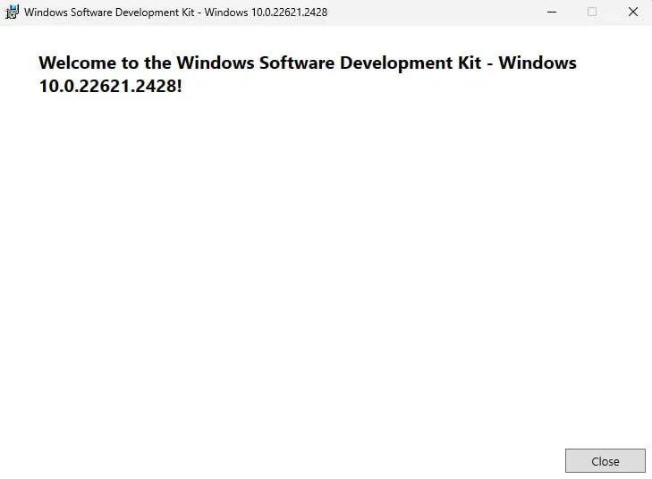
Download and Verify Gpg4win
SignTool can be used to verify the authenticity of the
gpg4win package itself.
Note: To simplify the SignTool verification process, be sure
to download the gpg4win package to the Downloads
directory.
1. Download the gpg4win package.
- Navigate to https://gpg4win.org/
- Download the latest version of
gpg4win.
At the time of writing gpg4win-4.3.1.exe was the latest
version.
2. Verify the gpg4win package by
running SignTool from the command prompt.
Now you need to manually locate signtool.exe and run it
as a normal *.exe file. You will need to provide a path to
your gpg4win-latest.exe file. Open PowerShell then add the
following:
Notes:
- Replace
[username]with your computer's username; the uploaded image uses "techy" as an example. - Replace gpg4win-
[version number].exe with the version of the downloaded gpg4win file..
& "C:\Program Files (x86)\Windows Kits\10\bin\10.0.22621.0\x64\signtool.exe" verify /pa "C:\Users\[username]\Downloads\gpg4win-[version number].exe".
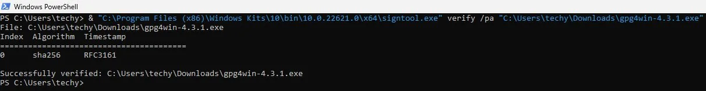
 Warning: If verification fails, delete the
Warning: If verification fails, delete the
gpg4win package and repeat the download and verification
process again.
If verification passes, then you are ready to trust and install gpg
using this file, i.e., gpg4win-latest.exe.
Download Tor Browser Installer for Windows
Tor Browser Installer for Windows package will be downloaded and used to install Tor Browser.
1. Browse to https://www.torproject.org/download/
2. Download Tor Browser installer for Windows:
Left "click" Windows icon →
"click" Save file.
3. Download the Tor Browser Installer GPG signature
file: Right "click" Sig (signature file) →
"click" Save Link As..[1]
Verify Tor Browser Installer
Note: At the time of writing (Aug 10 2019)
torbrowser-install-win64-8.5.4_en-US.exe was the current
stable release. When verifying the Tor Browser Installer package, users
must modify the package version in the steps below to correspond to the
Tor Browser Installer package version downloaded from https://www.torproject.org/download/
1. In the Windows start menu, open a command prompt.
cmd.exe
2. In the command prompt, change to the directory the Tor Browser Installer package and signature file was downloaded. In most cases this is the "Downloads" directory.
cd Downloads
3. Download the Tor Browser developers signing key.
From the Windows command prompt, run.
gpg --auto-key-locate nodefault,wkd --locate-keys torbrowser@torproject.org
Command out put should show the Tor Browser Developers GPG key has been imported.
gpg: key 4E2C6E8793298290: public key "Tor Browser Developers (signing key) <torbrowser@torproject.org>" imported
gpg: Total number processed: 1
gpg: imported: 1
pub rsa4096 2014-12-15 [C] [expires: 2020-08-24]
EF6E286DDA85EA2A4BA7DE684E2C6E8793298290
uid [ unknown] Tor Browser Developers (signing key) <torbrowser@torproject.org>
sub rsa4096 2018-05-26 [S] [expires: 2020-09-12]4. Verify the Tor Browser installer for Windows. Note: Remember to alter the below Tor Browser version number to match the package and signature file you downloaded.
In the Windows command prompt, run.
gpg --verify torbrowser-install-win64-8.5.4_en-US.exe.asc torbrowser-install-win64-8.5.4_en-US.exe
If the Tor Browser installer package is correct the output will tell you that the signature is good.
gpg: Signature made 07/08/19 07:03:49 Eastern Daylight Time
gpg: using RSA key EB774491D9FF06E2
gpg: Good signature from "Tor Browser Developers (signing key) <torbrowser@torproject.org>" [unknown]
gpg: WARNING: This key is not certified with a trusted signature!
gpg: There is no indication that the signature belongs to the owner.
Primary key fingerprint: EF6E 286D DA85 EA2A 4BA7 DE68 4E2C 6E87 9329 8290
Subkey fingerprint: 1107 75B5 D101 FB36 BC6C 911B EB77 4491 D9FF 06E2Bad signature warning.
If the command output shows a "Bad signature" warning. Users should immediately delete both the Tor Browser installer package and signature file. Then repeat the Tor Browser Installer sourcing and verification steps.
Key not certified warning.
gpg: WARNING: This key is not certified with a trusted signature!
gpg: There is no indication that the signature belongs to the owner.The above message can be ignored as it does not alter the validity of the signature related to the downloaded key. Rather, this warning refers to the level of trust placed in the Tor Browser developer's signing key and the web of trust. To remove this warning, the Tor Browser developer's signing key must be personally signed with your own key.
Install Tor Browser
Tor Browser installation is a simple process with Tor Browser Installer for Windows.
1. Choose the Tor Browser installation Path and language.
Navigate to the folder
torbrowser-install-win64-8.5.4_en-US was downloaded:
Double "click" tor-browser-install-win64-8.5.4_en-US→Select language→"click" OK→Choose Install Location→"click" OK→Choose Install Location→"click" Install.
Figure: Start Tor Browser Installer for Windows
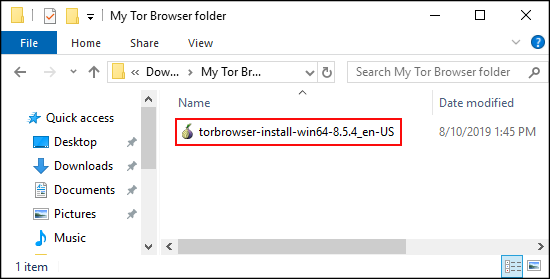
Figure: Select Language
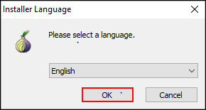
Figure: Choose Installation Location
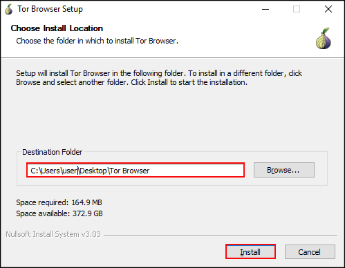
Figure: Tor Browser Installing
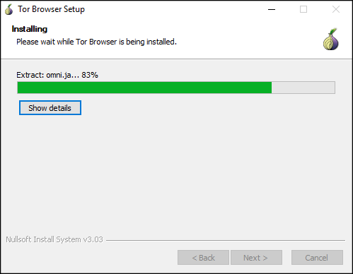
2. Complete Tor Browser setup.
Once Tor Browser has been installed a popup window will ask if a Start Menu and Desktop Shortcut should be added and if Tor Browser should be started once complete. Check ☑ both boxes and "click" Finish.
Figure: Tor Browser Installation Complete
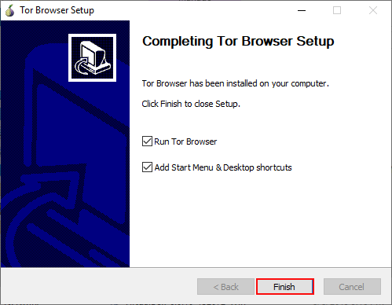
3. Network Connections
When Tor Browser starts for the first time it asks for "Tor Network
Settings" to be set. Click Connect, then wait while the
connection to Tor is completed. When Tor has successfully connected, Tor
Browser will open and it is ready for use.
Figure: Configure Network Connection
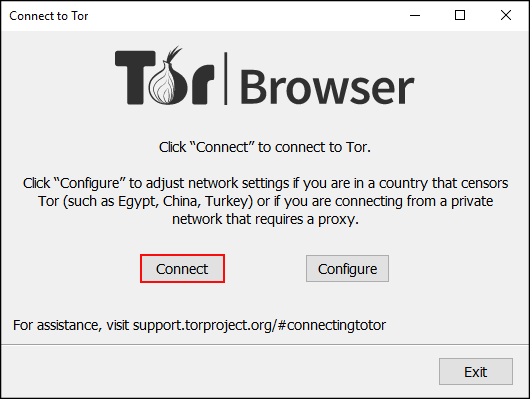
Figure: Connecting to Tor Network
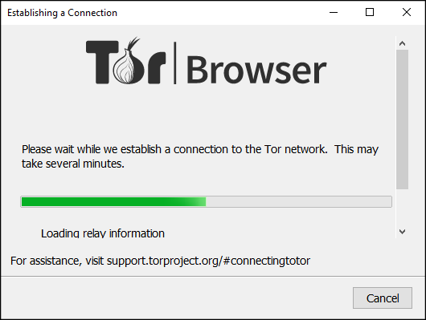
→ Done!
Footnotes
- Note: The file extension ".asc" may not be visible when first downloading the signature file
Categories: Documentation